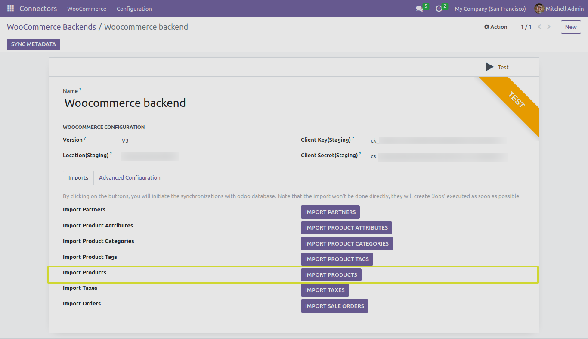

Product
In this section, we will explore the functionality of the “IMPORT PRODUCTS” button and its different test cases with advanced functionality when working with the Odoo Woocommerce Connector.
Advance Configurations of Product
There are several advanced functionalities when we are using “IMPORT PRODUCTS” button:

-
Importing Products Without SKUs: The connector can handle product imports even when WooCommerce products lack SKUs. It ensures that products without SKUs are integrated effectively.
-
If “Importing Products Without SKUs” boolean is False it will not import Woocommerce products that doesn’t consist SKU.

-
Setting Default Product Type: You can define a default product type for imported products. This saves time by automatically categorizing new products into the specified product type.
-
Setting Default Product Category: Similarly, you can set a default product category for imported products. This categorization simplifies product management.
-
Import From Date Functionality: The connector allows you to specify an import-from date. This ensures that only products created or modified after the specified date are imported into Odoo.